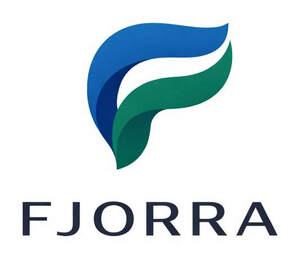

Trade Mark Journal No.2026/008 20 February 2026
UK00004328622 22 January 2026 (9,35,42)

- Class 9
- Downloadable computer software and mobile applications for business management, international trade, and e-commerce; artificial intelligence (AI) and machine learning software for data analytics and predictive modeling; downloadable digital files and multimedia content; computer software for managing logistics, supply chains, and dropshipping operations; downloadable electronic publications; computer software for automated decision-making and business intelligence.
- Class 35
- Business management and administration; business consultancy and advisory services; international trade consultancy; import-export agency services; commercial intermediation services [brokerage]; business strategy development; market research and data analysis; advertising, marketing, and promotional services; provision of an online marketplace for buyers and sellers of goods and services; retail services and wholesale services relating to commodities and construction materials; affiliate marketing services; administrative processing of purchase orders.
- Class 42
- Software as a Service (SaaS); Platform as a Service (PaaS); hosting of digital platforms and web facilities for others for sharing online content; providing access to an electronic marketplace [portal] on computer networks; design and development of computer software and marketplace platforms; technical consultancy services relating to information technology and software for dropshipping and affiliate marketing; cloud computing services; providing user authentication services for online software applications; computer programming and technical data analysis. .
Fjorra Ltd